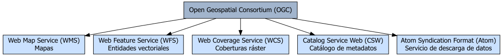
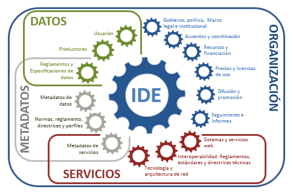
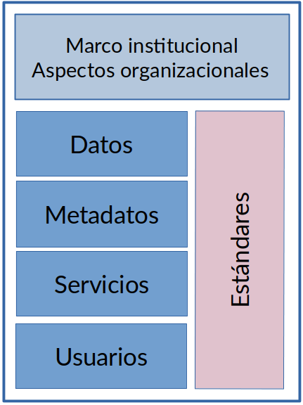
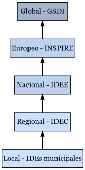

1 Introducción a las IDEs
Tradicionalmente, la obtención de información geográfica se ha caracterizado por una serie de dificultades como los formatos diversos, el coste de adquisición de los datos, o simplemnete dónde encontrar o cómo accedera a la información.
El desarrollo de tecnologías de la información y la mejora de las comunicaciones ha permitido superar estos obstáculos y facilitar el acceso tanto a la información del sector público como privado, amparándose en políticas de consenso y en un marco legal establecido. Todo esto, junto al auge de las tecnologías abiertas, han facilitado enormemente la búsqueda, acceso e intercambio de información.
La información geográfica es generada principalmente en el sector público (se estima que entre un 80 y un 90% de la información geográfica es generada por administraciones públicas). El desconocimiento de la información disponible hace que los datos puedan ser generados repetidamente por diferentes administraciones, aumentando innecesariamente el coste de los proyectos y multiplicando innecesariamente el esfuerzo y la inversión.
1.1 Antecedentes
En 1987, el comité Chorley, del Departamento de Medioambiente de Estados Unidos, concluyó que “las barreras políticas e institucionales que restringen actualmente el uso de los SIG deben ser superadas. Esto incluye problemas de incompatibilidad por diferencias de definición y formatos, así como restricciones al acceso y adquisición de los propios datos.”
En la conferencia de las Naciones Unidas sobre medio ambiente y desarrollo que tuvo lugar en Río de Janeiro en 1992, uno de los temas más relevantes fue el papel de la información geográfica para tratar los problemas ambientales, la cooperación internacional y el desarrollo. Quedó claro en aquel momento que establecer mecanismos para afrontar esos problemas pasaba necesariamente por implementar formas que permitieran aprovechar mejor la información geográfica y lograr una mayor coordinación entre las organizaciones estatales encargadas de su manejo [@olaya].
El concepto IDE nace en los años noventa como una iniciativa política en Estados Unidos para garantizar la interoperabilidad entre la información geográfica generada por las diferentes agencias federales.
La primera IDE se implantó a mediados de los 90, cuando EEUU inició el desarrollo de herramientas de acceso a datos, precursoras de las IDE Nacionales, para coordinar el desarrollo, uso, intercambio y la difusión de la cartografía topográfica y los datos espaciales relacionados.
En 1994, Bill Clinton aprobó la Orden Ejecutiva 12906 donde declaraba:
“La información geográfica es vital para promover el desarrollo económico, aprovechar nuestros recursos naturales y proteger el medio ambiente. La tecnología moderna permite mejorar la adquisición, distribución y utilización de datos geográficos y cartográficos. La Revisión del Desarrollo Nacional ha recomendado que la rama ejecutiva desarrolle, en cooperación con los estados, los gobiernos locales y el sector privado, una Infraestructura Nacional de Datos Espaciales para apoyar las aplicaciones de los datos geoespaciales en el sector público y privado, en áreas como el transporte, el desarrollo comunitario, la agricultura, la atención de emergencias, la gestión ambiental y la tecnología de información”.
Cronología clave
- 1987: Conclusiones del comité Chorley
- 1992: Conferencia de la ONU en Río de Janeiro
- 1994: Orden Ejecutiva 12906 de Bill Clinton
- 1996: 1ª Conferencia Internacional del GSDI
- 2000: Rediseño de IDEs de primera generación
- 2002: 120 países habían iniciado proyectos IDE
- 2004: Consolidación tras la constitución formal de la GSDI
En 1996 se celebra la 1ª Conferencia Internacional del GSDI (Global Spatial Data Infrastructure).
Otros países iniciaron los primeros pasos con los mismos objetivos. Los países que habían implementado IDE de primera generación se replantearon la iniciativa y la fueron actualizando y modificando, adaptándola a las necesidades del momento (alrededor del año 2000). Esto trajo un rápido incremento de nuevos países que se implicaron en el proceso de creación de infraestructuras de datos (el año 2002, 120 países habían iniciado proyectos IDE) y la aparición de una comunidad IDE, en la cual se podían compartir e intercambiar experiencias.
En 2004 se consolida tras la constitución formal de la GSDI.
1.2 ¿Qué es una IDE?
Existen varias definiciones para describir IDE, pero una de las más utilizadas y extendidas es la elaborada por la Federal Geographic Data Committee (FGDC) que la define como:
Definición FGDC
Una Infraestructura de Datos Espaciales (IDE) se puede definir como un conjunto de tecnologías, políticas, estándares y recursos humanos necesarios para adquirir, procesar, almacenar, distribuir y mejorar la utilización de la información geográfica.
Una IDE (Infraestructura de Datos Espaciales) es un sistema informático integrado por un conjunto de recursos (catálogos, servidores, programas, datos, aplicaciones, páginas Web,…) dedicados a gestionar información geográfica disponible en Internet, que cumpla una serie de condiciones de interoperabilidad [@miteco].
A partir de estas definiciones podemos entender que una IDE no es solo una implementación tecnológica sino que son sistemas integrados de datos, tecnologías y políticas diseñados para facilitar el acceso, uso y gestión de la información geoespacial Figure 1.1; comprende una parte muy importante de comunicación, entre personas, instituciones, empresas, etc. para establecer los marcos de colaboración para compartir, describir y acceder a los datos geográficos. A diferencia de un sistema de información geográfica (SIG) que se centra en la gestión de datos espaciales a nivel organizativo o local, una IDE permite compartir datos espaciales entre múltiples organismos, instituciones y el público en general, promoviendo la interoperabilidad y el acceso abierto a la información.
Su objetivo principal es permitir que los datos espaciales estén accesibles para diferentes usuarios (gobiernos, empresas, academia, ciudadanos) de manera eficaz y eficiente.

1.2.1 Comparación con infraestructuras físicas
Conceptualmente, las Infraestructuras de datos tienen la misma finalidad que las carreteras y las autopistas: mejorar la comunicación, facilitar el acceso, incrementar el comercio, etc.
| Infraestructura de tránsito | Infraestructura de datos espaciales |
|---|---|
| Objetivos: mejorar la accesibilidad y el uso de los coches | Objetivos: mejorar el acceso, el uso de la Geoinformación y evitar duplicaciones de datos |
| Red de transporte (carreteras, caminos, puentes, etc.) | Internet |
| Vehículos | Datos |
| Ayudas: mapas, carteles, señales | Catálogos (datos y servicios) |
| Conductores | Usuarios |
| Taller / Garaje (Servicios) | Webservices (geoservicios) |
| Parking | Almacén de geodatos de los proveedores |
| Fabricante de coches | Proveedores de datos y servicios |
| Código de circulación | Estándares |
| Regulación tránsito | Política + Legislación |
| Política (Centro de control de tránsito) | Marco institucional (Centro de Geodatos) |
Una buena infraestructura viaria proporciona una mejor accesibilidad, de lo que se deriva una mejor comunicación entre regiones y, por tanto, un incremento del comercio. Esta es precisamente, la finalidad de las IDE: facilitar el acceso y el uso de la información geográfica y fomentar su comercio.
1.3 Componentes de una IDE
Una IDE está compuesta de 5 elementos fundamentales (Figure 1.2):

1.3.1 Marco institucional
Para que una IDE pueda prosperar tiene que contar con un soporte institucional firme que se encarge de su puesta en marcha y garantice su impulso inicial. Este soporte se tiene que plasmar en un marco legal adecuado, que anime a las diferentes administraciones públicas o entidades a participar en las actividades de la IDE.
Por ejemplo la Directiva 2007/2/CE por la que se establece una Infraestructura de Información Espacial en la Comunidad Europea (INSPIRE; [@inspire]) y la Ley 14/2010, de 5 de julio, sobre las infraestructuras y los servicios de información geográfica en España (LISIGE; [@lisige]) se han elaborado de forma participativa. Estos marcos legales cumplen la función de consolidar las reglas acordadas por la comunidad para dar seguridad jurídica y sostenibilidad al proyecto. Debe ser un marco jurídico mínimo necesario para que se desarrollen con garantías las IDEs haciendo que no todo dependa de la buena voluntad de las partes implicadas.
1.3.2 Datos y metadatos
Cualquier tipo de dato que de forma directa o indirecta haga referencia a una localización se podría considerar como dato geográfico. Las administraciones públicas son las propietarias de la mayoría de la información geográfica de referencia. Las IDE son el canal mediante el cual pueden distribuir de manera eficaz la información geográfica.
No obstante los datos, por sí solos, no aportan información. Dicho de otro modo, los datos se pueden convertir en información a través de un procesamiento que les añada valor en contexto de aplicación apropiado. Por este motivo, es necesario evaluar la adecuación de los datos al problema o tarea a abordar, para lo que es indispensable su descripción. Los metadatos, cumplen este propósito, describiendo el contenido y las características de los datos (o servicios), aportando una información muy valiosa que ayuda a “contextualizar” el dato, y en ocasiones, facilitar su acceso. Estos metadatos tienen que ser:
- Almacenados en un Catálogo accesible
- Consultables para cualquier usuario
- Descritos según estándares que aportan las pautas de cómo y qué información hay que dar en cada caso
1.3.3 Servicios de visualización y acceso a datos
El intercambio de información y la interoperabilidad de los sistemas son dos conceptos clave en una IDE. Ambos se pueden conseguir gracias a los estándares y los geoservicios. OGC ha desarrollado una serie de especificaciones estándar que permiten a dos sistemas diferentes, con arquitecturas y formatos de datos diversos combinar cartografía sin ningún esfuerzo por parte del usuario.
Para facilitar la visualización y el acceso a los datos, los encargados del desarrollo de la IDE generalmente implementan un Geoportal que incluye entre otras cosas:
- Metadatos (descripción del contenido, la calidad y otras características de los datos)
- Catálogo (publicación en Internet de los metadatos de datos, servicios y esquemas)
- Servicio de acceso a datos y servicios (clientes, visores)
- Servidores de mapas con proveedores de información
- Servicios de geoprocesamiento (procesos informáticos que manipulan y transforman datos geoespaciales)
- Conexiones a otras IDEs
1.3.4 Usuarios y colaboradores
Para que una IDE se pueda considerar como tal, tiene que haber unos usuarios que la usen, en este sentido la tarea de difusión es muy importante. A medida que se incrementa su uso, las empresas empiezan a ver las posibilidades comerciales y a implicarse en el proyecto, acelerando así el crecimiento de la IDE.
Una comunidad IDE está integrada por varios actores como: - Productores de datos - Proveedores de servicios - Usuarios - Desarrolladores - Investigadores
Cuanto más abierta y colaborativa sea la comunidad mayor calidad tendrá la IDE. La idea es que incluya organizaciones públicas, privadas, universidades y particulares. Por el momento esta comunidad está formada principalmente por administraciones públicas.
1.3.5 Estándares
El uso de estándares es fundamental para garantizar la interoperabilidad entre diferentes sistemas y componentes de una IDE. Estos incluyen:
- Estándares para metadatos: ISO 19115, ISO 19119
- Estándares para servicios web: WMS, WFS, WCS, CSW
- Estándares para formatos de datos: GML, KML, GeoJSON
- Estándares para visualización: SLD, SE
Los principios FAIR establecen criterios para que los datos sean encontrables, accesibles, interoperables y reutilizables. Las IDEs cumplen con estos principios de la siguiente manera:
Findable (Encontrables): Publican catálogos de datos espaciales con metadatos normalizados (ISO 19115, Dublin Core), permitiendo su descubrimiento mediante motores de búsqueda.
Accessible (Accesibles): Proporcionan servicios web (WMS, WFS, WCS) que permiten la visualización y descarga de datos sin restricciones innecesarias, usando protocolos estándar (OGC, INSPIRE).
Interoperable (Interoperables): Utilizan formatos abiertos y estándares definidos por el OGC y normativas como INSPIRE, garantizando compatibilidad entre sistemas.
Reusable (Reutilizables): Mantienen metadatos completos que describen el origen, calidad y estructura de los datos, además de garantizar licencias claras para su reutilización.
En el contexto de las IDEs, los metadatos siguen estándares como ISO 19115, ISO 19139 y Dublin Core, asegurando su compatibilidad con iniciativas como INSPIRE en Europa.
Los metadatos juegan un papel clave en la implementación de los principios FAIR dentro de las IDEs:
Findable: Permiten indexar y catalogar los datos en geoportales y buscadores.
Accessible: Proporcionan información sobre las condiciones de acceso y uso de los datos.
Interoperable: Describen los estándares utilizados, facilitando su integración en distintos sistemas.
Reusable: Documentan la procedencia, calidad y restricciones de uso de los datos.
Los servicios de una IDE apoyan los principios FAIR de la siguiente manera:
Ofrecen catálogos y metadatos bien estructurados, además de identificadores persistentes (DOI, PURLs) para localizar los datos fácilmente.
Facilitan el acceso a los datos mediante repositorios abiertos y protocolos estándar (HTTPS, APIs).
Proveen servicios que permiten el uso de formatos estándar y la integración con otras plataformas mediante vocabularios comunes.
Gestionan licencias claras, metadatos completos y versiones de datos, permitiendo su uso y reutilización a largo plazo.
1.4 Principios en que se basa el desarrollo de una IDE
Datos recogidos una vez y mantenidos en el nivel donde se logra máxima efectividad - Quien genera, y sobre todo mantiene, un tipo de datos debe encargarse de organizarlos en una base de datos y facilitar el acceso a ellos mediante los servicios adecuados - No deben duplicarse los mismos datos en bases de datos distintas que no aseguren exactamente el mismo nivel de actualización
Debe ser posible combinar IG con total continuidad para un ámbito territorial extenso desde fuentes diversas - La información geográfica en un ámbito territorial debe basarse en una información geográfica de referencia común, y acorde con la precisión de la información geográfica y en un único Sistema Geodésico de referencia - Debe ser posible superponer capas de información geográfica de distintas temáticas y procedencias
Debe ser posible compartir la IG entre usuarios y aplicaciones
Debe ser posible que la información recogida en un nivel o sector sea compartida por los otros
Debe ser fácil descubrir la información geográfica disponible, y en qué condiciones puede conseguirse y usarse - Metadatos - Calidad - Normas comunes
En un escenario óptimo, todo usuario de una IDE debería poder descubrir, por ejemplo, qué información geográfica existe en zona concreta del territorio, visualizar esta información y finalmente, si es de su interés, descargarla.
Para llegar a esta meta, toda IDE que se precie debe:
1.4.1 Orientar su arquitectura a servicios (SOA)
Uno de los principios básicos de toda IDE es la no replicación de datos geográficos ni la creación de grandes bases de datos centralizadas. Una IDE debe fomentar un modelo distribuido donde cada departamento o ente se responsabilice de sus datos y se encargue de describirlos y ponerlos a disposición de los demás.
1.4.2 Implementar aplicaciones para descubrir, visualizar y procesar información
Entre estas aplicaciones podríamos definir un núcleo presente en toda IDE: - Un catálogo de metadatos - Servidores de mapas - Un conjunto de servicios geográficos
1.4.3 Adoptar estándares de interoperabilidad geoespacial
Para la descripción de los metadatos se basa en estándares ISO de la familia 19, dedicada al mundo geospacial. Pero a nivel de interfaces de comunicación entre servidores y entre clientes (ej. Un navegador web) y servidores existe un consorcio llamado OpenGeospatial (OGC) encargado de definir las especificaciones utilizadas.
Podríamos decir que el papel que juega el consorcio W3C en cuanto a la estandarización de la World Wide Web (WWW) es parecido al de OGC dentro del mundo geoespacial.
1.5 La utilidad de las IDE y sus ventajas
Cuando un usuario quiere acceder a información geográfica se puede encontrar con una situación caótica, al no saber dónde ir a buscarla. A nivel de cooperación entre administraciones y empresas, la situación es también muy compleja, a causa del gran número de contactos que hay que realizar para obtener estos datos y los permisos para utilizarlos.
Escenario con IDE
En un entorno IDE todo es más sencillo. Gracias a la catalogación de los datos y mediante los servidores de catálogo los usuarios pueden localizar y acceder a la información geográfica existente. La IDE se encarga también de establecer acuerdos con las administraciones con el objetivo que estas permitan la difusión de su información mediante un servicio de webmapping.
Ambos servicios (servidor de catálogo y webmapping) tienen que ser accesibles a través de un único portal web.
El uso de las IDE mejora considerablemente la dinámica del sector de la geoinformación. Otras ventajas son:
- Facilita la toma de decisiones
- Reduce esfuerzos y costes
- Proporciona mejores datos y más actualizados
- Apoya la creación de nuevas oportunidades de negocio
Hay que tener presente que una IDE no se tiene que ver sólo desde la vertiente tecnológica sino que existe también una vertiente social, en que los usuarios (el sector público, el privado y la población) tienen que dar su opinión, a partir de la cual se podrán determinar las estrategias a seguir.
En el proceso de implantación de una IDE también hay que superar obstáculos:
- No disponibilidad de datos
- Falta de estándares
- Metadatos incompletos
- Limitaciones en redes de comunicación y banda ancha
- Coste de implementación
- Financiación sostenible
- Modelos de negocio
- Conocimiento técnico
- Educación
- Preocupaciones de seguridad
- Restricciones en libertad de acceso
- Datos sensibles
- Propiedad intelectual
- Falta de marcos legales
Las IDE, además de mantener vías de cooperación y relaciones con el sector público y privado de su región, tienen que hacerlo también tanto con las IDE de su nivel como con las de otros niveles.
1.6 Tareas que permite una IDE
Una IDE bien implementada permite realizar diversas tareas fundamentales:
Buscar la información disponible por:
- Zona geográfica
- Formato
- Año de producción
- Productor
- Disponibilidad de servicios
- Etc.
Visualizar y superponer mapas, ortofotos, y datos geográficos de diferentes:
- Organismos
- Formatos
- Sistemas de referencia
- Etc.
Localizar entidades geográficas por su nombre y ver su ubicación
Analizar datos mediante operaciones básicas:
- Cálculo de perfiles
- Análisis de superficies
- Etc.
Transformar de un modelo de datos a otro diferente, si ambos están descritos
Descargar los datos para análisis más complejos con un SIG
1.7 Niveles de desarrollo de una IDE
Tenemos que pensar que una IDE conlleva un factor multi-escalar en su implementación, esta puede ser implementada a nivel europeo, nivel estatal, nivel regional e incluso a nivel municipal. Cada nivel tiene la responsabilidad de interoperar con el resto de niveles.

Ejemplos de niveles de desarrollo de una IDE:
- Global: GSDI (Global Spatial Data Infrastructure) - http://gsdiassociation.org/
- Europeo: INSPIRE (INfraestructure for SPatial InfoRmation in Europe) - http://inspire-geoportal.ec.europa.eu/
- Nacional: IDEE (Infraestructura de Datos Espaciales de España) - http://idee.es/
- Regional: IDEC (Infraestructura de Dades Espacials de Catalunya) - http://www.ide.cat
- Local: Barcelona - https://w133.bcn.cat/geoportalbcn/GeoPortal.aspx?lang=es
2 Futuro de las IDEs
La evolución de las IDEs puede analizarse en distintas generaciones:
Evolución de las IDEs
1ª Generación: Centrada en los datos espaciales, su publicación, armonización y firma de acuerdos institucionales y definir políticas para compartir información.
2ª Generación: Enfocada en la interoperabilidad. Una vez que los datos ya están disponibles se enfocan en las aplicaciones (geoportales, visores, etc.) y en los servicios (WMS, WFS, WPS, descarga de datos, análisis, etc).
3ª Generación: Actualmente en definición, con potencial de integración con tecnologías emergentes.
Hoy en día, las IDEs están impulsadas por el movimiento de datos abiertos y su papel en el desarrollo de ciudades inteligentes.
Desde mediados de los 2000 se habla de las IDE semánticas (web semántica, linked data). Más allá del ámbito académico y algunos estudios, han pasado 15 años y no existe una implementación práctica generalizada.